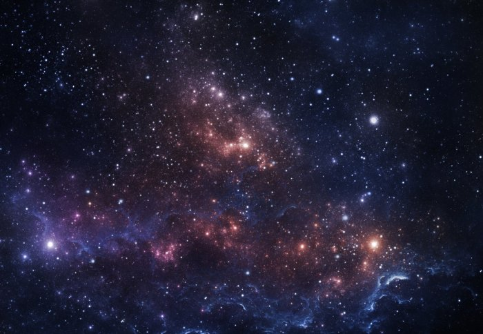

- The universe is all of space and time and their contents, including planets, stars, galaxies, and all other forms of matter and energy.
The Big Bang theory is the prevailing cosmological description of the development of the universe. According to this theory,
space and time emerged together 13.787±0.020 billion years ago,[11] and the universe has been expanding ever since the Big Bang.
While the spatial size of the entire universe is unknown,[3] it is possible to measure the size of the observable universe.
-
Some of the earliest cosmological models of the universe were developed by ancient Greek and Indian philosophers and were geocentric,
placing Earth at the center.[12][13] Over the centuries, more precise astronomical observations led Nicolaus
Copernicus to develop the heliocentric model with the Sun at the center of the Solar System. In developing the law of universal
gravitation, Isaac Newton built upon Copernicus's work as well as Johannes Kepler's laws of planetary motion and observations by Tycho Brahe.
- Further observational improvements led to the realization that the Sun is one of a few hundred billion stars in the Milky Way, which is one of a
few hundred billion galaxies in the observable universe. Many of the stars in a galaxy have planets. At the largest scale, galaxies are distributed
uniformly and the same in all directions, meaning that the universe has neither an edge nor a center. At smaller scales, galaxies are distributed in
clusters and superclusters which form immense filaments and voids in space, creating a vast foam-like structure.[14] Discoveries in the early 20th century
have suggested that the universe had a beginning and has been expanding since then.
-
According to the Big Bang theory, the energy and matter initially present have become less dense as the universe expanded.
After an initial accelerated expansion called the inflationary epoch at around 10−32 seconds, and the separation of the four known fundamental forces,
the universe gradually cooled and continued to expand, allowing the first subatomic particles and simple atoms to form.